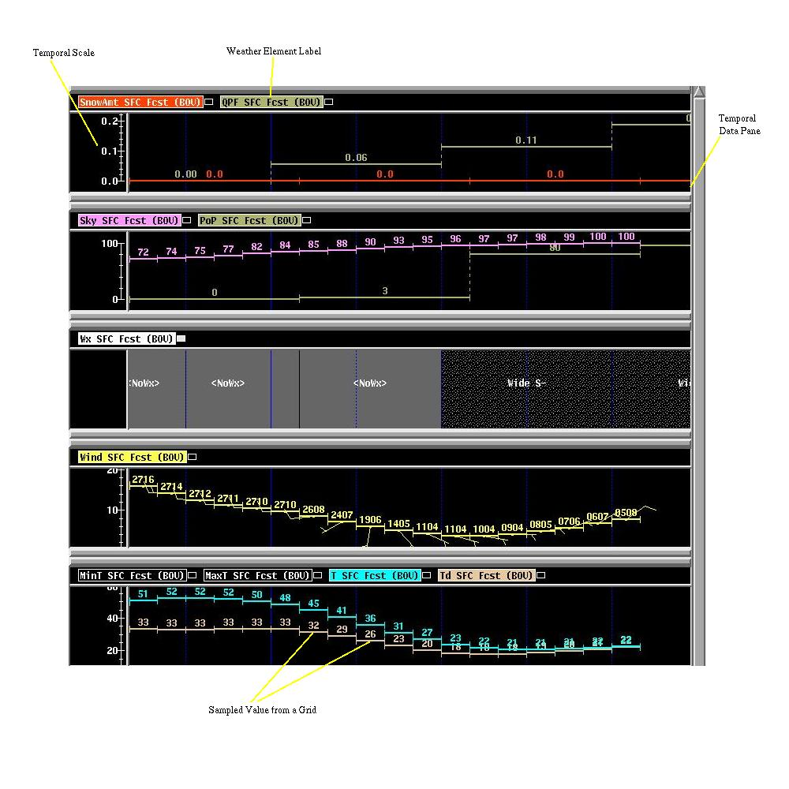
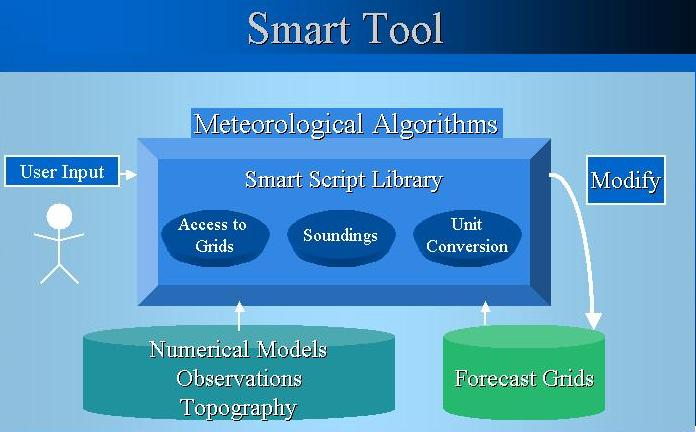
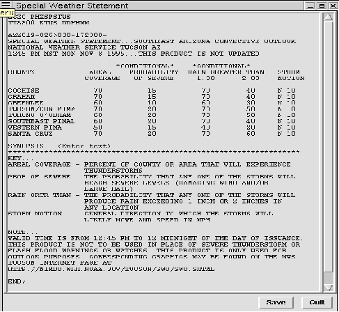
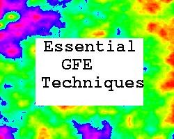

|
|
 |
GFE Spatial Editor Training Guide |
 |
GFE Grid Manager Training Guide |
|  | GFE Temporal Editor Training Guide |
| GFESuite Python Tutorial and Programming Guidelines | |
|  | GFE Smart Tools Training Guide |
|  | GFE Text Products User Guide |
 |
Intersite Coordination Training Guide |
|  | The Essential GFE Techniques document gives you several dozen GFE operations to perform. This document is a good test to see whether you have mastered the GFE. |